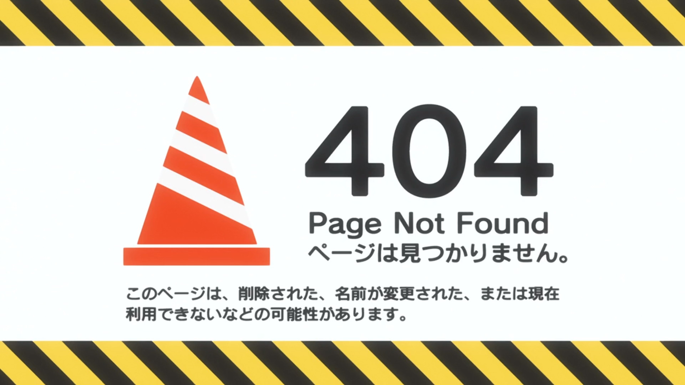
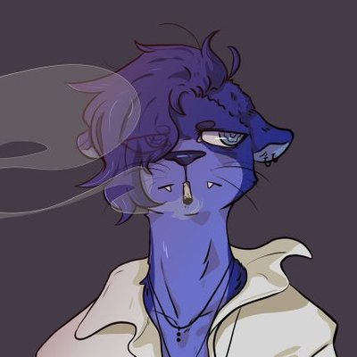
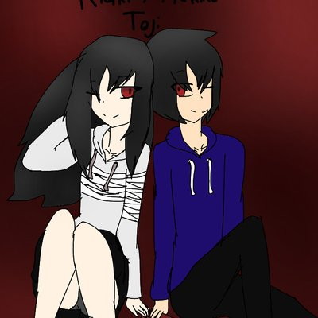
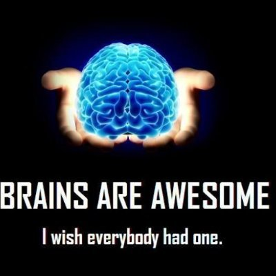

Personnes que j'apprécie
Ici je vous présente des mutus avec qui j'ai pas mal parlé et même certains d'entre eux sont devenus des amis très proches, je risque de les taquiner un peu mais sachez qu'au fond je les apprécie.

Placeholder
Placeholder, en attente de remplacement

Lunar
Meuf faut choisir ton pseudo, c'est Light ou Lunar ? Ou p'têtre Okana ? bref. Une fille super gentille (bien qu'aussi peu intelligente que moi) qui a une GROSSE passion pour le montage et honnêtement je la comprends, le montage, c'est super cool. Grande amie et ancienne de la #TeamBetty. Ne pas la follow est une erreur également

Hakiro
Hakiro est un homme de la société- Ah non je me suis trompé, il reste cloîtré chez lui, un peu comme tout les gens que j'ai cité. Un gros weeb, je n'aurais pas l'audace de dire "comme moi" tellement il est dans le futur. Il est très sympa malgré le fait que je comprends pas toujours tout à ce qu'il dit mais je crois que c'est parce que je suis pas assez allé à l'école dans ma vie. Il est assez peu actif sur twitter mais quand il est là ça se transforme en méga fête
Placeholder
Placeholder, en attente de remplacement.

dragutux
dragutux est quelqu'un qui fait du développement de jeux vidéo depuis 10 ans maintenant. Il a actuellement plusieurs projets dont un survival avec la possibilité de jouer en ligne en coopération mais aussi se mettre des tatanes entre joueurs. C'est quelqu'un de plutôt sympa, un peu vieux mais aimable puis c'est pas parce qu'il est un peu vieux que c'est un méchant bougre non mais.
Kimiiu
Kimiiu c'est... ma rivale... cette petite- Haha je rigole, Kimiiu c'est une streameuse qui est géniale (mais chuis mieux parce que c'est le premier qui le dit qui l'est :D) et qui est aussi une vtubeuse et je trouve justement que ce qu'elle fait est très courageux parce que souvent les vtubers en france se font un peu insulter donc elle m'impressionne pas mal sur ce point là. Mise à part ça c'est une personne en or (en même temps si elle est là c'est que c'est le cas) et ne pas passer voir ce qu'elle fait et ne pas intéragir avec elle c'est quelque chose d'ultra dommage, donc allez voir sa chaîne twitch ainsi que son compte twitter qui vous tiendra informés de choses à venir